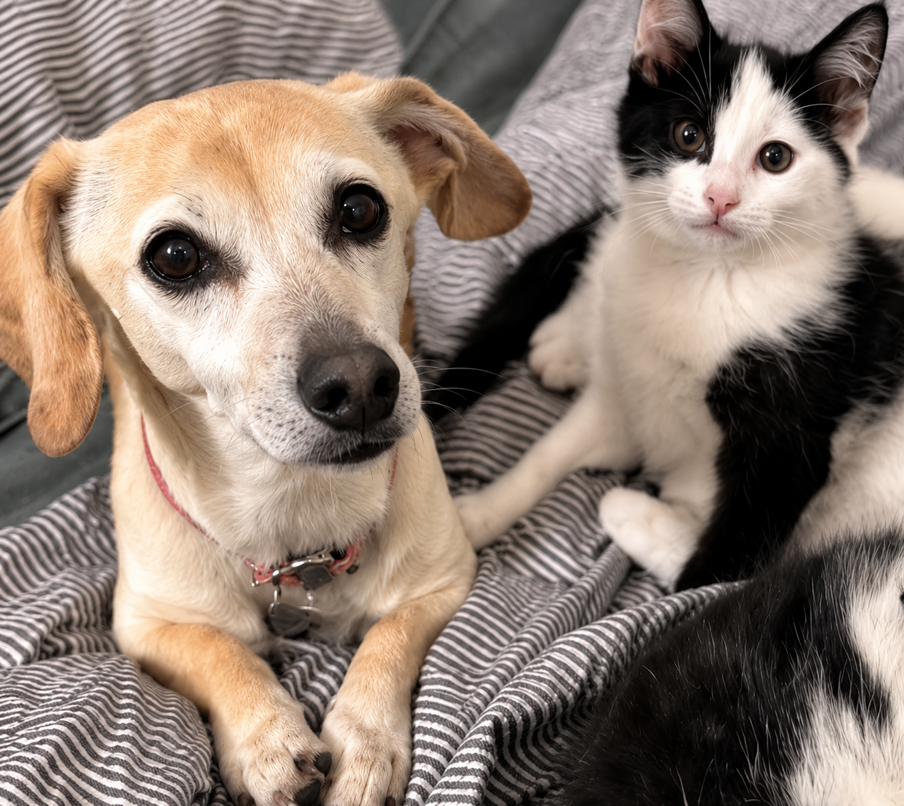
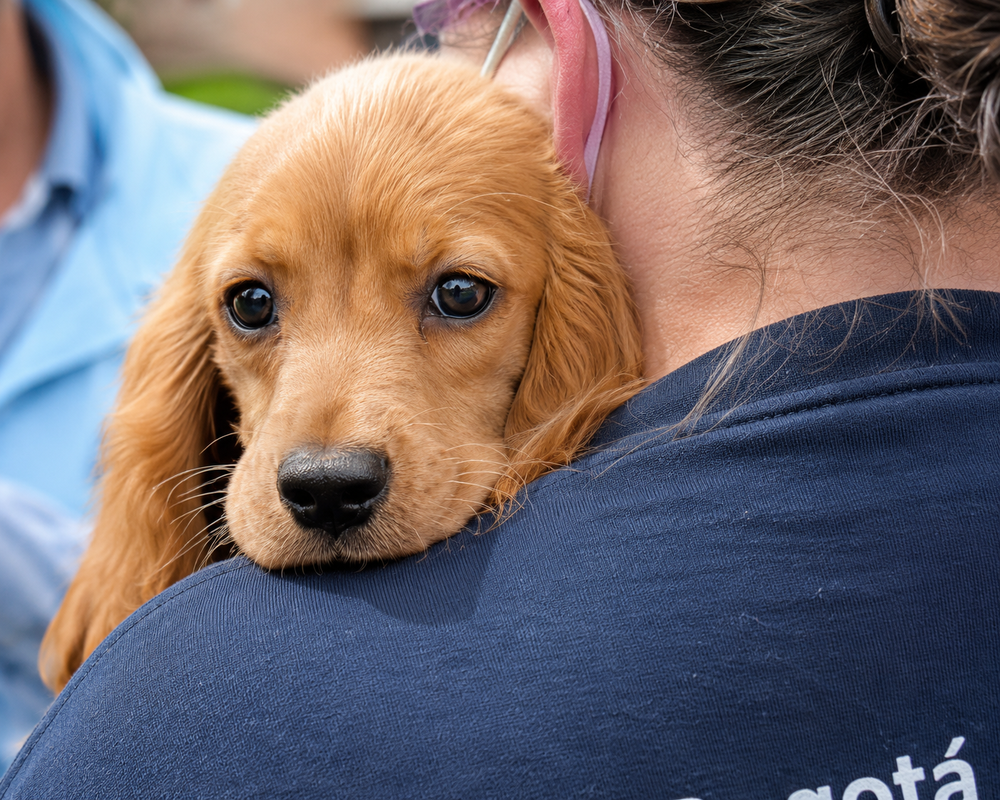
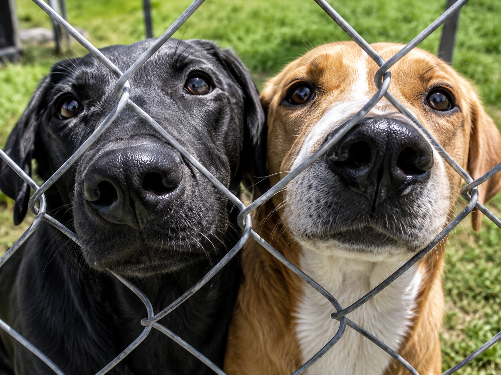
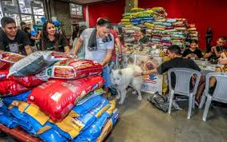
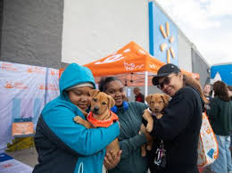
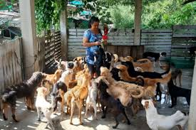

Ser el refugio referente a nivel nacional por nuestros estándares de bienestar animal, logrando una sociedad donde el abandono sea cosa del pasado y cada animal sea respetado.

Transformar la realidad de los animales abandonados mediante el rescate ético, la concientización social sobre la tenencia responsable y el fomento de la adopción como primera opción.





